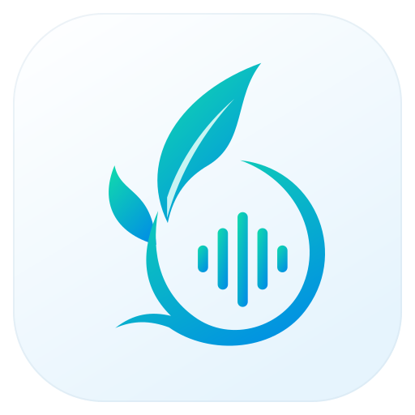
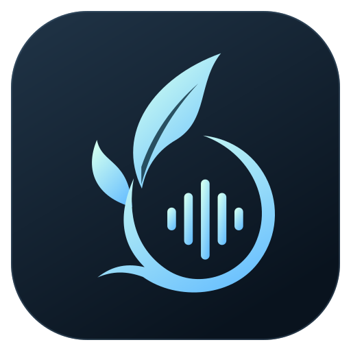

<!doctype html><html lang="zh-CN"><meta charset="utf-8"><title>EdenVoice · 正式图标</title><style>
*{box-sizing:border-box}body{margin:0;font:14px -apple-system,BlinkMacSystemFont,'Segoe UI',sans-serif;background:#eef3f6;color:#142c3c}main{display:grid;grid-template-columns:1fr 1fr;max-width:1400px;margin:auto}.column{padding:48px;min-width:0}.night{background:#0d1824;color:#edfaff}h1{font-size:16px;letter-spacing:5px;font-weight:500;margin:0 0 44px}h2{font-size:11px;letter-spacing:2px;opacity:.5;margin:26px 0 14px}.wordmark{width:100%;height:100px}.app{width:180px;height:180px;display:block;margin:30px auto}.sizes{display:flex;align-items:center;gap:28px;min-height:85px;padding:20px 24px;border:1px solid #8297a32b;border-radius:16px}.size{display:grid;justify-items:center;gap:12px}.size small{font-size:10px;opacity:.5}img{object-fit:contain}.note{opacity:.5;font-size:12px;line-height:1.8;margin-top:30px}
</style><main><section class="column"><h1>日间 / DAY</h1><h2>客户端 · 应用图标</h2><div class="sizes"></div><h2>系统托盘 · 实际尺寸</h2><div class="sizes"><div class="size"><small>16 px</small></div><div class="size"><small>20 px</small></div><div class="size"><small>24 px</small></div><div class="size"><small>32 px</small></div></div><p class="note">矢量母版 · 青绿至湖蓝 · 高对比单色托盘</p></section><section class="column night"><h1>夜间 / NIGHT</h1><h2>客户端 · 应用图标</h2><div class="sizes"></div><h2>系统托盘 · 实际尺寸</h2><div class="sizes"><div class="size"><small>16 px</small></div><div class="size"><small>20 px</small></div><div class="size"><small>24 px</small></div><div class="size"><small>32 px</small></div></div><p class="note">矢量母版 · 薄荷至冰蓝 · 高对比单色托盘</p></section></main></html>
